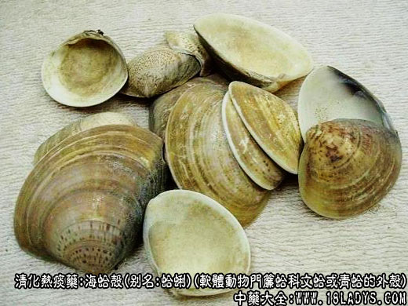

海蛤壳为少常用中药，《神农本草经》列为上品。
别名：文蛤、蛤蜊、蛤壳。
来源：为软体动物门帘蛤科文蛤青蛤的外壳，生于浅海泥沙中。
产地：我国沿海各地、北起辽宁南至广东均有生产。
性状鉴别：
（1）文蛤：壳较坚厚，高5～10厘米，长6～12厘米，两壳扣合，宽3～5.5厘米，背缘略呈三角形，腹缘呈圆形、壳顶突出，稍偏向前方，并微向腹面弯曲。小月面狭长呈矛头状，楯面宽大卵圆形。壳表面向外隆起被有一层黄褐色光滑似漆的壳皮。同心生长轮脉清晰。由壳顶开始常有环行的和色带。壳面花纹多样，壳内面白色、平滑、前后缘有时呈紫色，铰合部宽。右壳3个主齿，2个前侧齿，两个前主齿，呈倒“V”字形，后主齿斜长。左壳具3个主齿及1个前侧齿，两上前主齿略呈三角，后主齿长与背缘平行。齿面具两个纵沟、沟内有横列波形细齿。前闭壳肌痕小，略呈半圆形；后闭壳肌痕大呈卵圆形。外套肌痕明显，外套窦痕短，呈半圆形。气无、味淡。
（2）青蛤：壳较薄，近圆形。长与高几乎相等。长高3.5～6厘米，两壳扣合宽2～3.5厘米。壳顶位于背侧中央，并向前弯曲。无小月面。楯面狭长。贝壳极凸出，同心生长轮脉在顶端极细密，至腹面渐变粗，突出壳面。壳面淡黄色或棕色，常随环境改变，亦或带有紫色边缘及色环。贝壳内面白色或淡粉色，平滑，有的边缘呈紫色，两侧及腹缘具有整齐的小齿，铰合部狭长而平。左右壳各具3个主齿，集中于铰合面前部，前闭壳肌细长呈半月形，后闭壳肌痕大，呈椭圆形，外套肌痕明显。外套窦痕深，自腹缘向上方斜伸至贝壳中心，呈三角形。气无味淡。
以上两种蛤壳，均以壳内外洁净，个大者为佳。
主要成分：含钙质。
药理作用：清热利湿、化痰散结。
炮制：生用或煅用。
性味：咸、寒。
归经：入肺、肾经。
功效：清肺热、化痰止咳、消瘿瘤。
主治：咳嗽气喘、胸肋满痛，痰多不利。瘿瘤瘰疬等症。
临床应用：
（1）治痰火咳嗽，有喘满、胸闷、痰多而黏稠难出者（例如肺气肿之咳嗽）较适合。现代用之配海浮石、猪胆粉等治慢性气管炎合并感染，有解痉，镇咳，祛痰作用，方如蛤蛆片。
（2）治瘿瘤。前人已观察到本品配海带、海藻、海螵蛸、海昆布等能治气肿、瘿瘤。现代用海蛤粉配海螺、海藻、海螵蛸、昆布制成“四海舒郁丸”，治甲状腺癌有一定疗效。
（3）用于利湿、收敛，治淋浊（配滑石、冬葵子、木通等）、白带（配黄柏、椿根白皮等）。
此外，海蛤粉内服有用于治胃和十二指肠溃疡病，外用配轻粉、青黛、黄柏、煅石膏等，制成蛤粉膏治酒渣鼻，都有较好疗效。
附：海蛤壳与海浮石比较：两者都能清热化痰，适用于痰粘不易咳出，其区别为1、用于风邪热咳时，海浮石较好，用于肺气肿喘息性慢性气管炎之类，海蛤壳效力较优；2、海蛤壳还能入血分散淤滞，如《伤寒论》治妇人热入血室，发病如狂者，除针刺期门穴，还用小柴胡汤加桃仁、海蛤壳以消散瘀热。
用量：3～9g，入丸（片）、散剂为主。
处方举例：
蛤蛆片（福建龙溪地区方）：海蛤粉280克，海浮石240克，海蚬壳240克，猪胆粉40克，共为细末，混均制成药片1000片，每片0.8克。每日三次，每次4片。副作用偶有腹泻、疲乏、头晕，但停药后即自行消失。
四海舒郁丸（《疡医大全》）：海蛤粉6g，海带60g，海藻60g，海螵蛸60g，青木香15g，陈皮6g，工研细末，炼蜜为丸，每日二次，每服9g。
附：文蛤为海蛤之一种，其贝壳有花纹，故名，性味功能与海蛤同。
注：
（1）除以上两种蛤壳外有些地区以珠蚌壳作蛤壳用，如背瘤丽蚌、顶瘤丽蚌壳大而厚，壳内面乳白色平滑，有珍珠样光彩。产于淡水湖泊中。
（2）历代本草均载有海蛤。《证类本草》附图包括青蛤与文蛤两种。李时珍说：“海蛤者，海中诸蛤烂壳之总称，不专指一蛤也”。可见古代诸蛤皆入药。淡水蚌类之壳能否通用尚待研究。